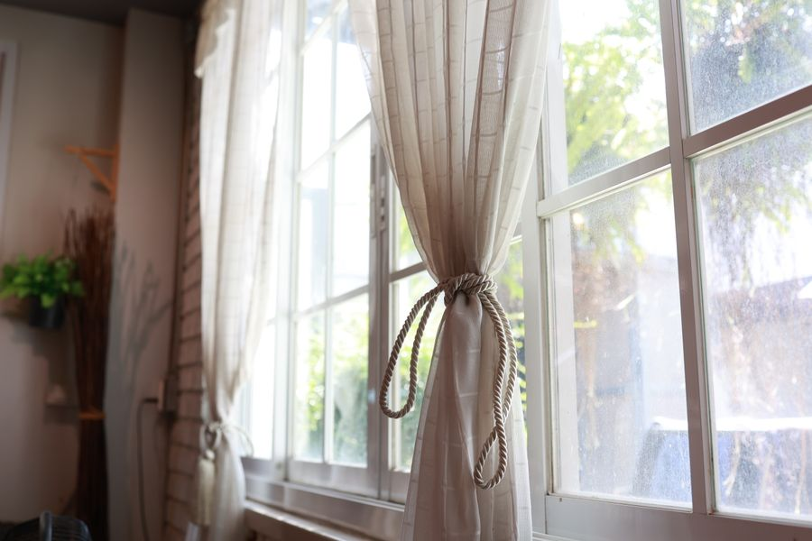
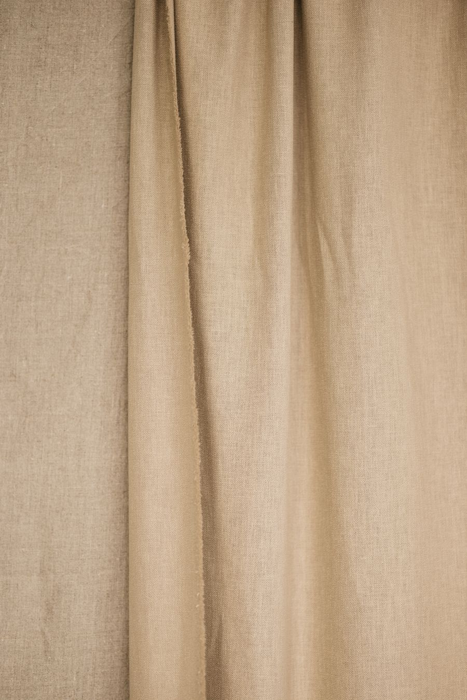
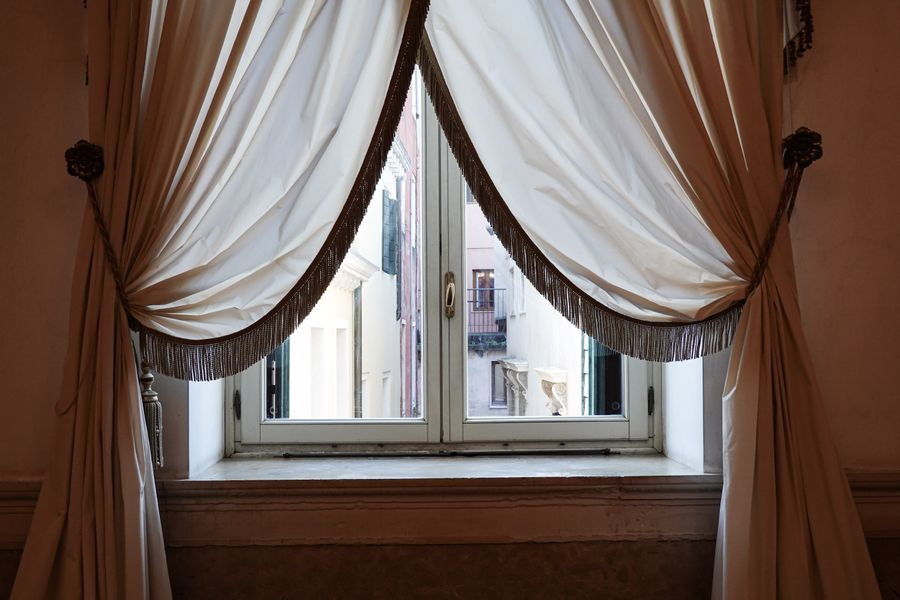
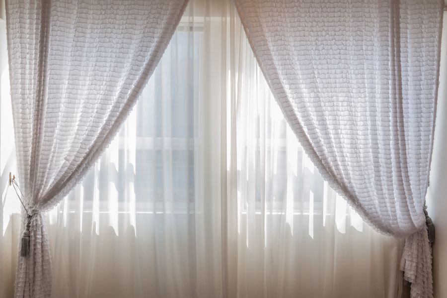
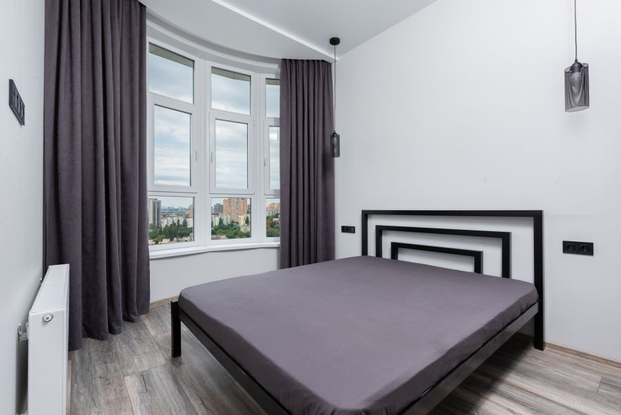
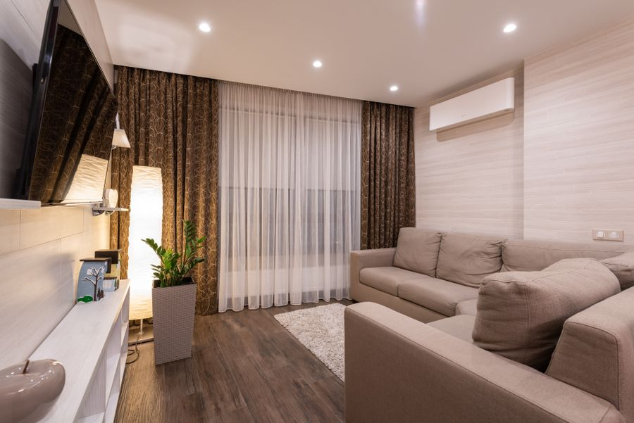
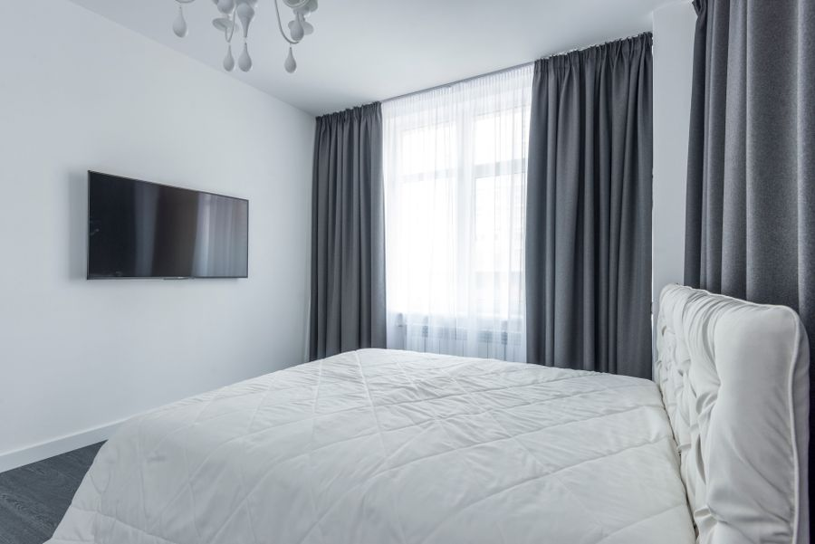
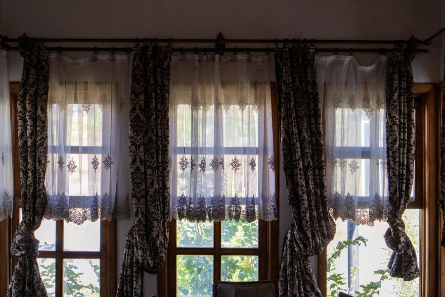
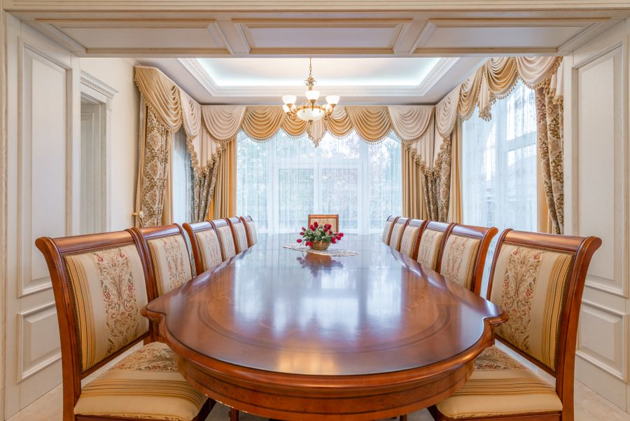
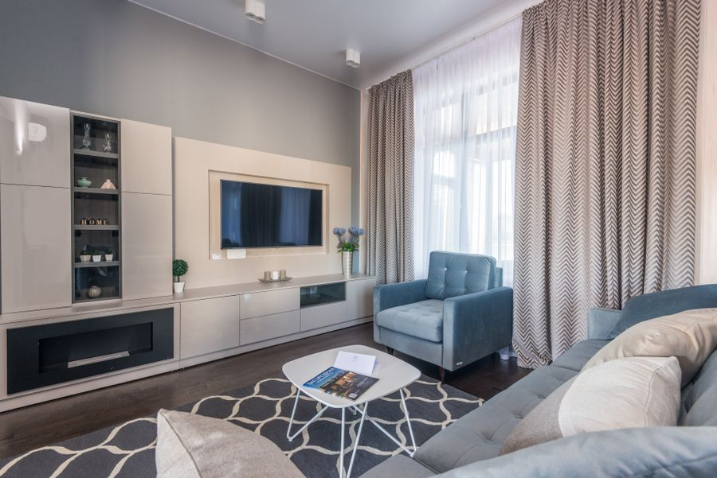

cotton · minimal
Cotton
Breathable, softly matte and easy to live with · bedroom
The DrapeCraft collection
Explore textures, finishes and silhouettes selected to look beautiful and work hard in your home.
Browse the collection
cotton · minimal
Breathable, softly matte and easy to live with · bedroom

linen · modern
Slubbed weave with a relaxed, fluid drape · living
velvet · classic
Dense pile that deepens colour and softens sound · bedroom
polyester · contemporary
Crisp pleats that hold their shape and resist creasing · living

silk · traditional
Subtle sheen that lifts daylight in a dining room · dining

sheer · minimal
Keeps rooms bright while softening hard daylight · living

blackout · modern
Room-darkening fabric for deeper, calmer sleep · bedroom

sheer · modern
Clean-lined folds with a quiet architectural fall · living

cotton · minimal
Plain weave that lets the room do the talking · bedroom

velvet · classic
Tailored pleats and patterned weave, traditionally dressed · dining

velvet · luxury
Weighted layers that pool softly at the floor · living

linen · contemporary
Soft uniform weave with a warm, current feel · living
The swatch box
Screens flatten colour and texture. During a home visit we open the swatch box in your room, so you can judge every fabric against your walls, your floor and the light you actually live with.
Next step
Bring your shortlist to life at home. We will measure your windows, talk through light and privacy, and price the work clearly.